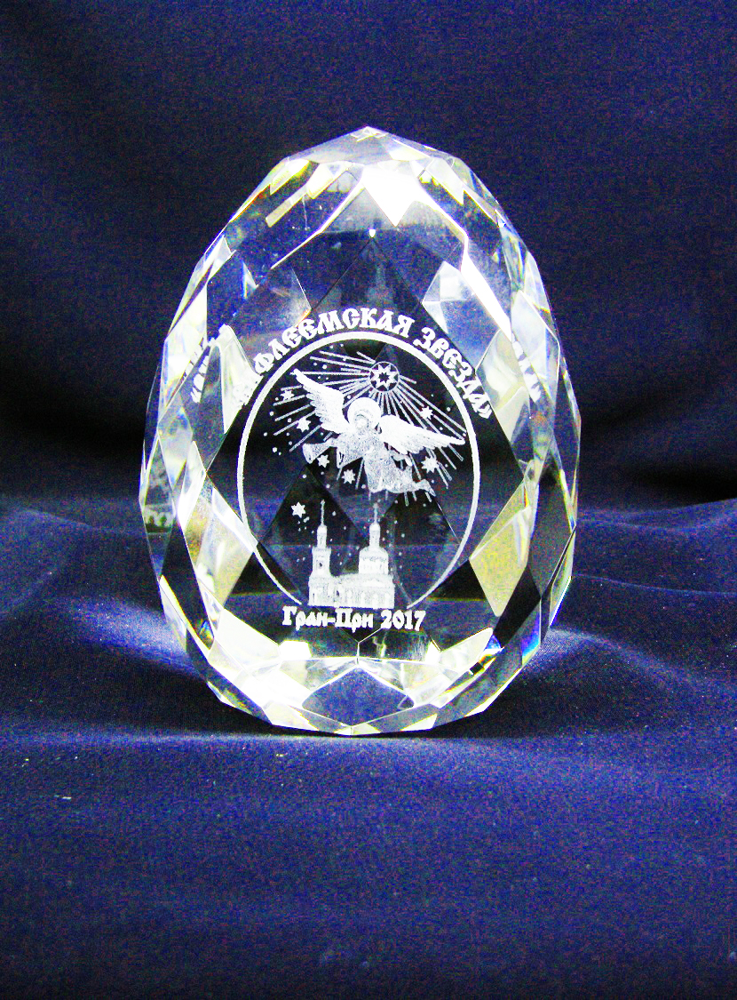
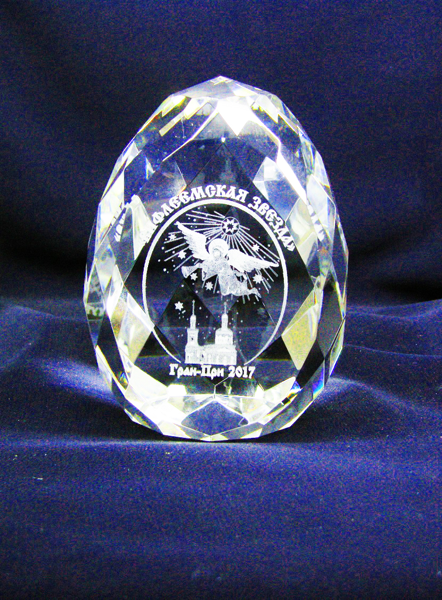

Рождественский конкурс-фестиваль детского изобразительного творчества «Вифлеемская звезда» проводится ежегодно, начиная с 1997 года, по инициативе Детского клуба «Юный художник». В 1997 году протоиерей Марк Клименко, настоятель храма святителя Филиппа в Мещанской слободе, благословил Детский клуб «Юный художник» на проведение конкурса-фестиваля «Вифлеемская звезда». Руководители клуба Успенский Александр Васильевич и Пискарева Вера Михайловна разработали проект конкурса, его эмблему – «Ангел, парящий над храмом Влахернской иконы Богоматери и возвещающий о Рождестве Христовом», концепцию и положение о проведении конкурса и, начиная с 1997 года, стали его организаторами и учредителями. С 2003 года конкурс-фестиваль стал проводиться в статусе международного и получил поддержку Святейшего Патриарха Московского и всея Руси Алексия II.
Участниками Конкурса являются общеобразовательные школы, детские художественные школы и школы искусств, детские клубы, центры, студии и объединения, другие учреждения культуры, образования, досуга, социального воспитания и их воспитанники в возрасте от 5 до 18 лет (возрастные группы: 5–6 лет; 7–8 лет; 9–10 лет; 11–12 лет; 13–14 лет; 15–18 лет).
Участие в Конкурсе бесплатное.
 
